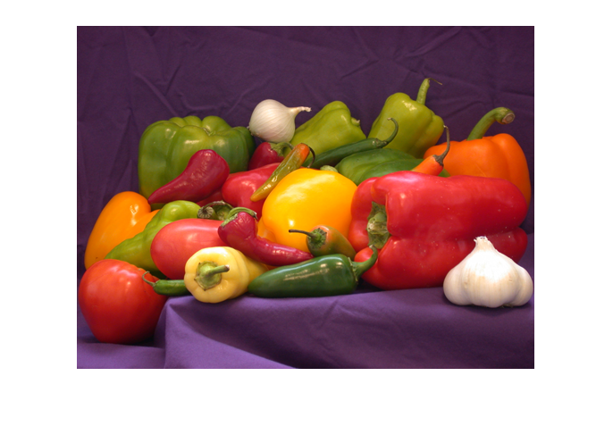

K-Means¶
Topic Overview¶
K-Means is a popular clustering algorithm. Clustering algorithms fall into the category unsupervised learning. As such, K-Means sorts input data into a parameterizable set of clusters.
This topic is a wrapper around training material that originates from an inhouse training given to a company specializing in spectral image analysis; the hard- and software they create is used to classify chunks of material running by on a conveyor belt. The topic artifacts might contain terminology from their problem domain (a lot of MATLAB stuff).
The problem is demonstrated not by dealing with spectral images with 256 planes, but by color-reducing this PNG image
to this
Artifacts¶
Like Linear Regression, this topic consists of
A Jupyter Notebook (download:
/trainings/log/detail/2019-11-12/code/BigPlan.ipynb)A corresponding Python program (download:
/trainings/log/detail/2019-11-12/code/color-reduce.py)Input data, in the form of a PNG (download:
/trainings/log/detail/2019-11-12/code/veggie.png)
{kind=link}